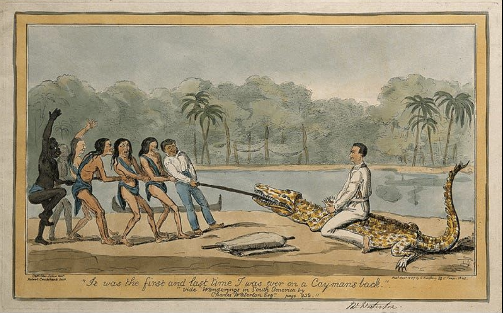
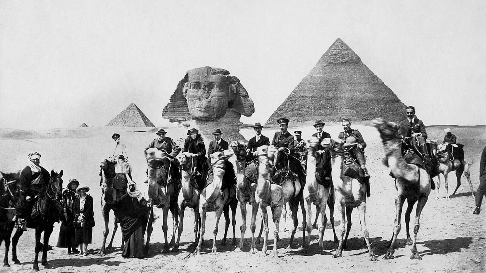

On British Adventuring and Eccentrics
A Note On Britain’s Most Moving Export

Members of a community often wrap themselves in stories and identities that they feel project their vision of who they are or how they want to be perceived into the world. These tend to be positive traits in the eyes of that community, but can be viewed sardonically by others: one group’s pride in good common decency is another’s prudish behaviour limiting creativity. This scales to a national level. Myths and beliefs about who we are, what we believe, and how we want to be perceived are a form of cohesiveness for societies, and tend to be self -reinforcing. Oddities and non-subscribers to the view either left willingly or were forced to leave, for their heretical beliefs could undermine the security of the wider group through creating splits and chasms. In the Middle Ages you would be thrust from the hamlet; today, you may find yourself ejected from a WhatsApp group. Humans have a very strong biological instinct ingrained deep in their soul to not be an oddity, to not be expelled from a group.
If social cohesion is therefore an explicit or even subconscious goal of most individuals, groups or societies, it is perhaps curious and underexplored that Britain has managed to make one of its leading character types the adventurous eccentric who has historically tended to be an outsider to such groups. There is something curious about a society that places such importance on belonging, convention and social cohesion, yet has made the eccentric outsider one of its most cherished national archetypes. These are a people who do not find peace in their communities or class groups, who do not subscribe to the current set of societal beliefs. But uniquely, they tended to have a very strong sense of patriotism for the dream that was Britain, or in many cases, the British Empire.
Leaf through the annals of history in any given region, and you will likely come across some such character. Throughout the Long Nineteenth Century, and on into the 1920s, British eccentrics could be found in the further reaches of the Empire, picking up local languages, dissecting and drawing small animals and plants, occasionally partaking in a small civil war or clan affair. Often born into the gentry or new wealth back in England, several spent time at Oxford or Cambridge University before becoming fixated on some aspect of their studies – say Sanskrit – and, having become obsessed, decided to spend a good portion of their lives away from England’s shores.
A walk through the Holy Land reveals many such characters. Lawrence of Arabia is perhaps the most famous – a man whose eccentricities were matched only by his achievements – but other fellow eccentrics include Gertrude Bell, a name which has sadly fallen into obscurity. Bell remains one of the Empire’s most legendary explorers, and a foundational figure in the creation of modern Iraq. The granddaughter of a British politician, niece of a British Minister in Persia, and child of a powerful progressive capitalist and mill owner, Bell studied at Oxford before embarking on a life of frontier exploration and discovery. She counselled no fewer than three British High Commissioners, briefly worked with Lawrence in Egypt, founded the Iraq Museum, chaired the Baghdad library, advised the first leader of modern Iraq, King Faisal, and found time to be snapped in a picture with Lawrence and an upstart British politician visiting the country, one Mr Winston Churchill (Bell is pictured between the pair under the noseless Sphinx in 1921, below).
One essay cannot do her life justice, as is the case with many British eccentrics, but Newcastle University’s effort to create a virtual map where you can click on her notes and letters is a truly stellar offering, and is particularly worth visiting to see Bell’s views on Chinese society in the years after the Boxer Rebellion and a decade before the First World War.

There are dozens of others from the Long Nineteenth Century alone, and not just found in far-flung geographical frontiers: in science, in biology, in learning. British eccentrics born into immense wealth, into structured systems with pre-existing ideas of what makes this society work, what makes it great, how they should behave and act. And yet this visceral, burning desire to explore, to push the frontiers of geography, of knowledge and science and discovery causes them to throw themselves to faraway lands, often encountering great hardship, sickness or imprisonment in the process.
“I love to sail forbidden seas, and land on barbarous coasts”
British adventurous eccentrics broadly fall into two categories.
First, a desire for freedom, from routine, from social expectations, from the current conventions – but underpinned not by a hatred of any of those things or those who chose to practise them. For example, Lady Florence Dixie headed to Patagonia in 1878 precisely to escape stuffy Victorian society, returning with a pet jaguar called Affums, which she acquired after hiding up a tree to escape its mother, and which followed her around like a dog until she had to hand it over to London Zoo. Or the frequently ill Isabella Bird, who found independence travelling in the Rocky Mountains and Japan and formed a tight bond with a one-eyed rugged man in the former. Not far away, Charles Waterton explored South America, ingesting poisons and creating odd taxidermies that were meant to be a commentary on British political life back home.
Second, a burning desire to understand an issue at a granular level. Thomas Manning, one of the first real British sinologists, became fascinated with China, learned to speak Chinese in France, and eventually travelled to Tibet, meeting a young Dalai Lama. Manning grew a long beard for the journey and dressed in Chinese clothing. Although he didn’t get into China’s interior from Tibet (being refused entry) and reached Peking only in 1816, as interpreter to the Amherst embassy, he decided, on his journey home, to interview Napoleon, who had once let him leave wartime France and had been defeated two years earlier at Waterloo. Then there was Richard Spruce, a perennially sickly Yorkshire botanist with a particular obsession for mosses and liverworts, who spent a decade and a half exploring the Amazon and Andes collecting and classifying plants, helping the British Empire treat malaria in India in the process.
A final note
Britain’s love of eccentrics has, unfortunately, been somewhat mired of late, while others have leaned into the term as a means of commercialising their social media profiles or online presence. I think neither fully gets to the heart of what British adventurous eccentricity looks like: for I know a handful of men and women today who find themselves in far-flung territories, speaking to men and women and children from entirely different cultures, jotting down discoveries in notebooks and learning new ideas and languages. You will not see them on your screens or in your papers, but they are out there, driven by the same peculiar combination of curiosity, independence and restlessness that propelled their predecessors around the world. Long may this British tradition continue.